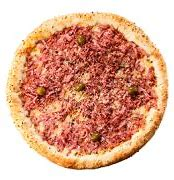

Pizza
Pizza é uma preparação culinária que consiste em um disco de massa fermentada de farinha de trigo, regado com
molho de tomates e coberto com ingredientes variados que normalmente incluem algum tipo de queijo, carnes
preparadas ou defumadas e ervas, normalmente orégano ou manjericão, tudo assado em forno.
Alguns tipos e sabores
A variedade de coberturas que se pode colocar sobre uma pizza é quase infinita, entretanto, algumas preparações são tradicionais e têm fiéis seguidores:
-  Margherita
- Mussarela
- Portuguesa
- Calabresa
- Toscana
- Pepperoni
- Quatro queijos
- Pomodoro
Fontes
- http://pt.wikipedia.org/wiki/Pizza
- http://www.pizza.it
- http://en.wikipedia.org/wiki/History_of_pizza
w w w . p i z z a o n l i n e . c o m . br